Award & Team
Best Storytelling, Visko Living Worlds Track
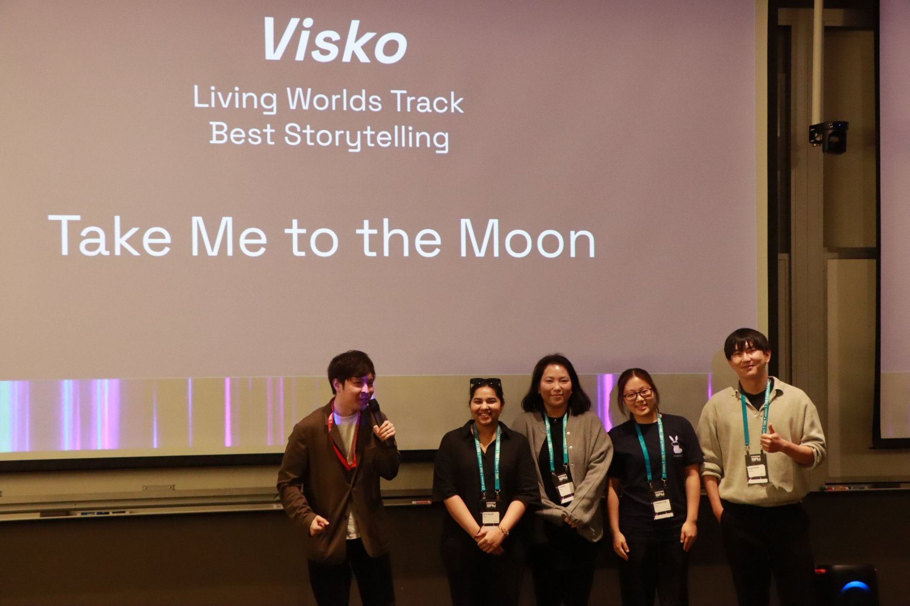
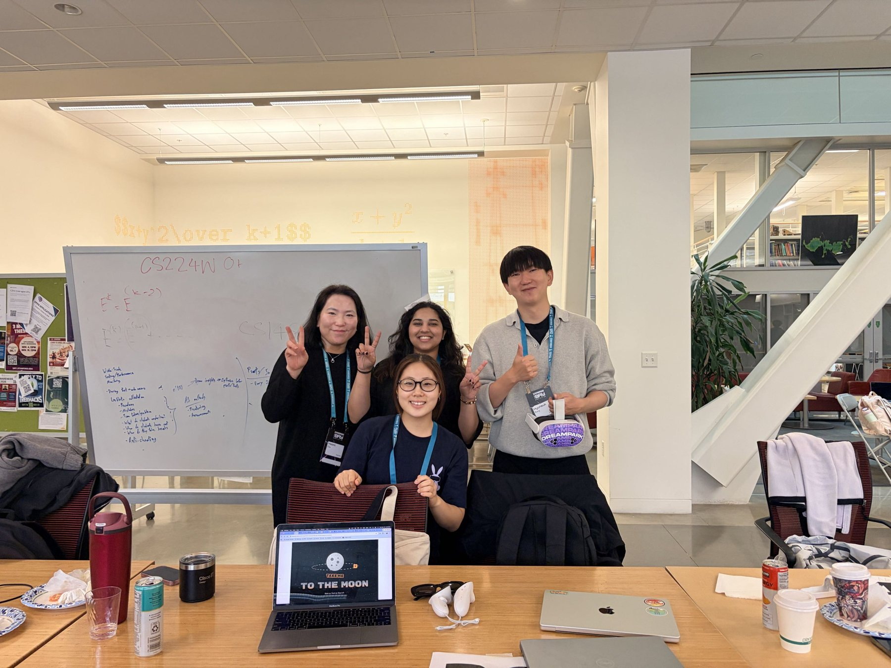
System
One real-time loop, from choice to live video
The headset calls OpenAI directly. The AI acts as a story director, returning structured data every turn — the scene, two choices, their wellness costs, and video prompts. Those prompts go to Visko, and the generated video streams back into Unity. Carrying this loop through an entire playthrough was the hardest part of the build.
Built for a standalone headset. Everything runs on Meta Quest 3, with no PC or server kept running during play.
One story controller holds the inventory, choices, and wellness score, so the UI, the physical objects, and the video always agree on where the player is.
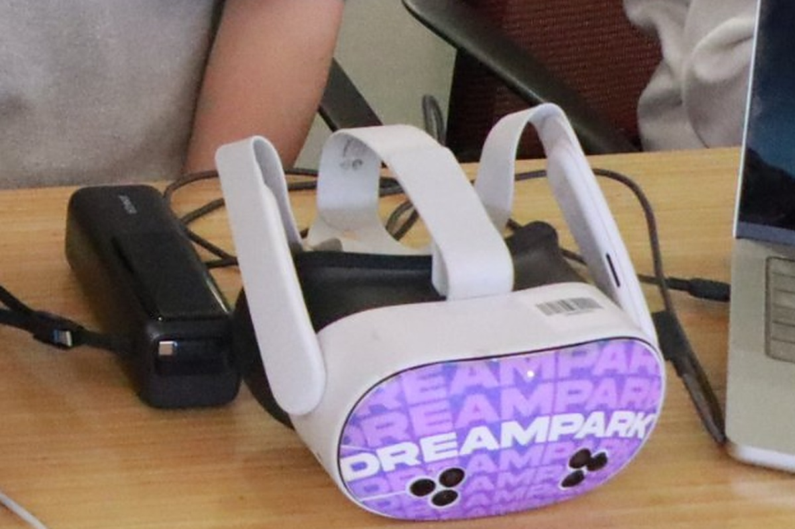
Player choice
The player picks one of two options inside the VR panel.
AI story director
OpenAI writes the next scene, two choices, and wellness costs from the full history.
Visko generation
Video prompts are turned into a live, generated scene.
Unity playback
Video streams onto a curved screen wrapped in a 360° skybox.

Fixed where it sets the tone
- The opening emergency broadcast is prerecorded, so every player starts with the same urgent, cinematic hook.
- The success and failure endings are prerecorded, so the verdict always lands cleanly.
Live where choices matter
- Every story scene between the dorm and the Moon is written and rendered live from the player's history.
- The lunar arrival is generated too, so the ending reflects the journey that led to it.
My Role
Game flow, VR UI & demo production
I started the project and led a team of four. I designed the game flow, the UI, and its components in Figma, and created the background and visual assets the team built from. Our developer translated those designs into readable VR panels in Unity. I also produced the showcase video, capturing in-game footage and editing it with VLLO and Figma.
Design
- Mapping the six-checkpoint game flow
- Designing VR UI panels and reusable components in Figma
- Creating background and visual design assets
- Defining panel size, distance, tilt & contrast for VR
- Building layouts that survive AI text of any length
- Designing the wellness bar and choice feedback
Story & Production
- Storyboarding scenarios on a whiteboard with the team
- Tuning the wellness score through live testing
- Capturing in-game footage
- Editing the demo video (VLLO, Figma)
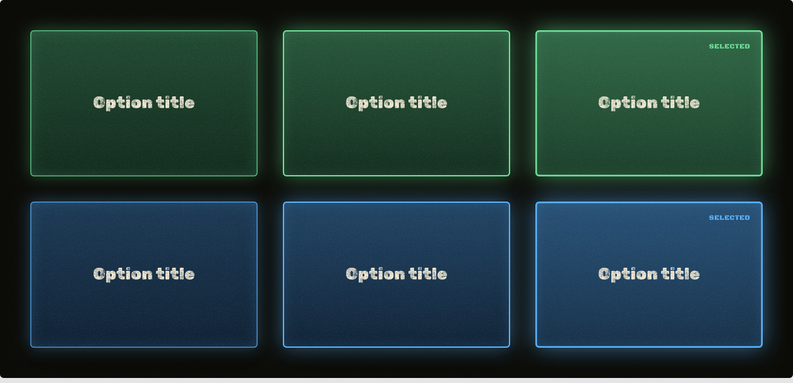
Choice cards
Green and blue variants with default, hover, and selected states.
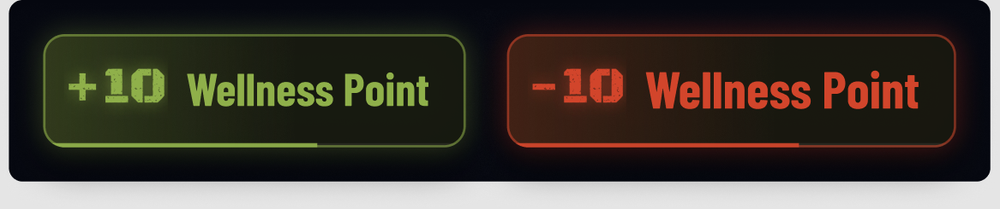
Wellness feedback
The +5 / −5 popup and the wellness bar's good, warning, and critical states.
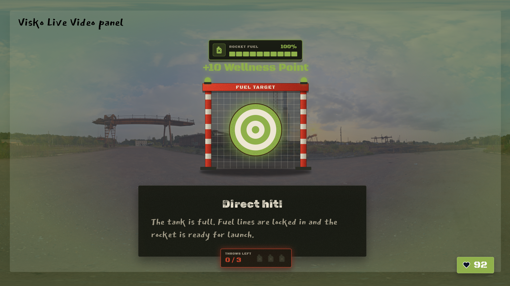
Mini-game UI
Target, fuel gauge, and throws-left counter for the launch pad.
Design Approach
Theme → Fixed Storyboard → Self-Writing Story
Starting point: this year's Immerse the Bay theme, "Take Me to the Moon." We imagined the journey beginning somewhere every player could picture — a Stanford dorm room — and focused on storytelling so anyone could pick it up and see themselves in it.
Theme
Turn a fixed destination into a question about character: not if you escape, but who you become on the way.
Fixed storyboard
Lock six locations and leave the events at each one open, so the AI has guardrails without losing variety.
Self-writing story
Let the AI write each scene in real time, remembering earlier choices so the journey feels connected.
Designing the AI's Rules
Content rules that keep live writing readable in a headset
The AI writes every line the player reads, so the copy had to be designed as a system, not as individual screens. We gave the story director a set of rules that keep each scene short enough to read at a glance over moving video, and every choice hard enough to matter.
Exactly two
Every decision is a real dilemma between two grabbable objects, never something small like left or right.
Verb first, ≤ 6 words
Labels address the player as "you" and start with an action, so they read instantly in VR.
≤ 20 + 30 words
One sentence for the outcome, then two for the next scene: what's in front of you, then the problem.
One event per scene
Each scene has one thing happening and at most one new character, so the story never outruns the player.
Every decision has one good and one bad option, and the player isn't told which is which. The bad option always has to be tempting: safer, faster, or more loyal to someone the player cares about. Helping someone costs the player something, and helping yourself costs someone else.
The Journey
Six checkpoints, endless playthroughs
You get 15 seconds to grab three of five items from your room and place them in your inventory tray. Those items come back at the launch pad, where you throw them to fuel the rocket. The locations are fixed; what happens at each one is written live, and people you help or abandon can return later.
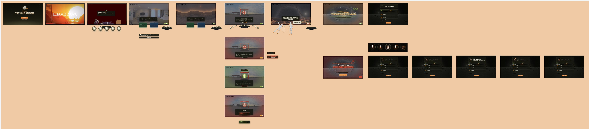
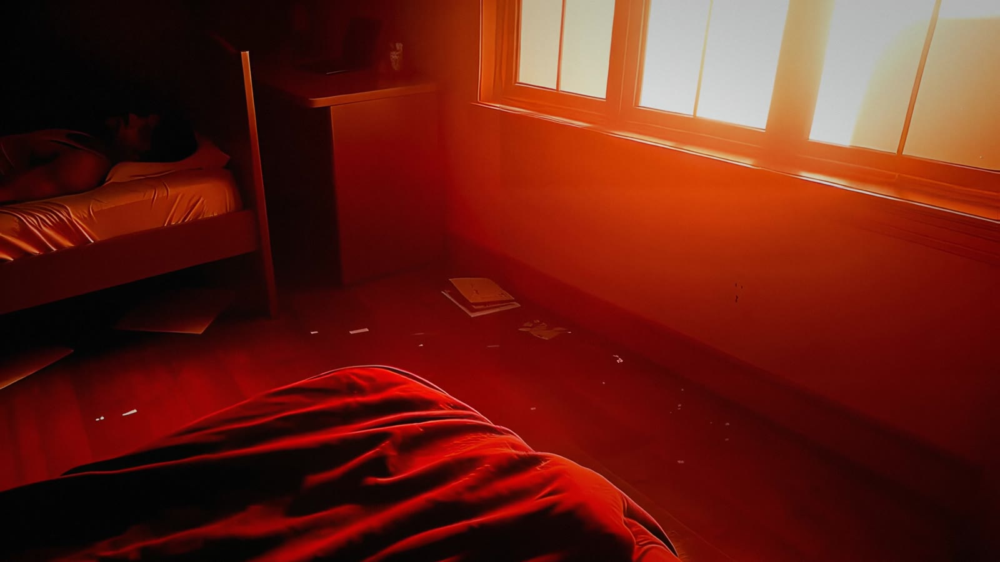
The dorm room
Wake your roommate, or slip out alone.
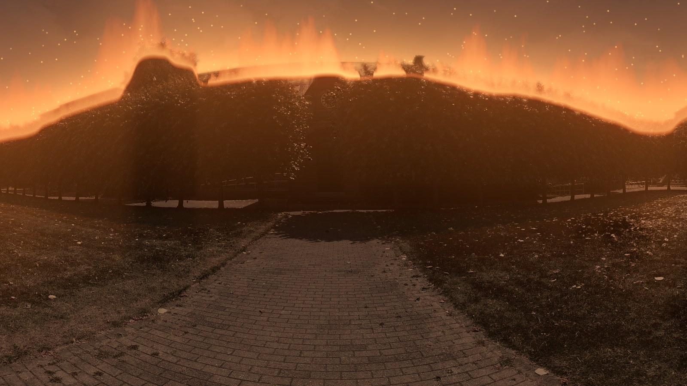
Memorial Church
On a burning campus: steal a motorbike, run the Caltrain tracks, or flag down an ambulance.
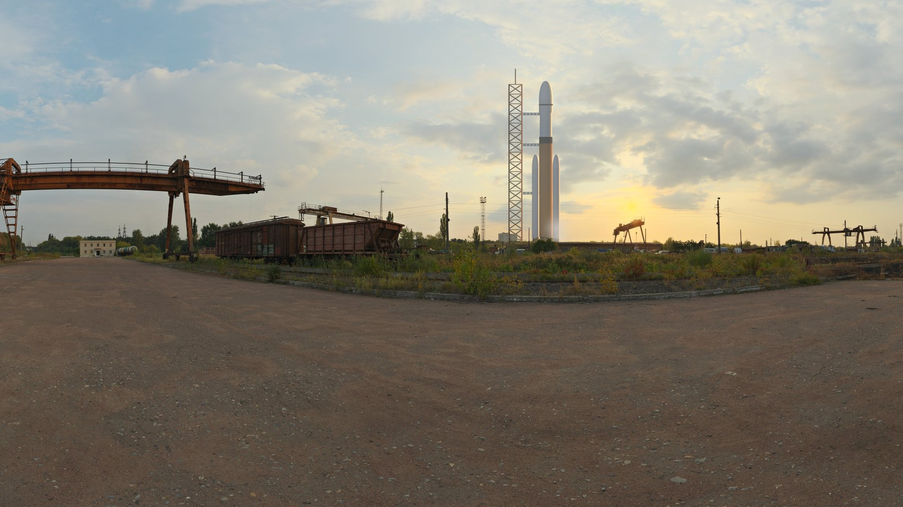
The launch pad
Fuel the rocket by hand, throwing your items into the tank.
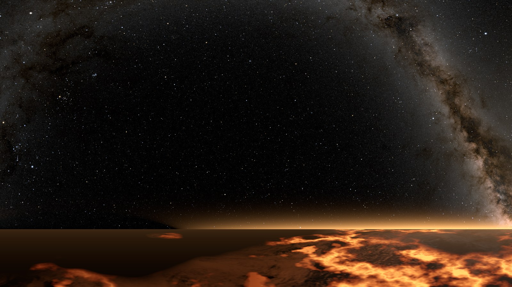
Low orbit
The rocket is too heavy. Cut loose the strangers on your ladder, or pull them in and risk everything.

The approach
Your roommate returns to the story — beside you, or calling from Earth.
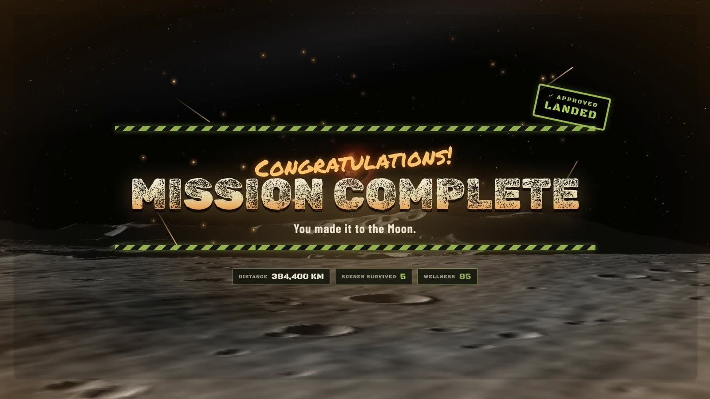
The Moon
Your choices are judged at the colony gate.
Design Challenges & Solutions
Seven friction points, seven design decisions
Challenge 1
Designing spatial UI for the first time
The friction: this was my first VR hackathon, and I had never designed spatial UI. Flat-screen rules broke in the headset: text over constantly changing live video became hard to read.
Before the event, I studied Meta's Quest design guidelines and Apple's Vision Pro Human Interface Guidelines. During the build, I applied them to rethink panel size, viewing distance, tilt, and contrast for the headset.
I could make spatial layout decisions with confidence from day one, and every scene kept a consistent look, feel, and navigation, readable no matter what video played behind it.

Challenge 2
Keeping up with a story that kept changing
The friction: the storyline shifted constantly as the team iterated, and every change meant new components and assets, often within minutes, under tight time pressure.
I used AI throughout my workflow to generate and adapt components and assets quickly. When I found out late that the video storyboard had to be vertical, not the wide format I had started with, AI let me update every frame in a fraction of the time.
Prototyping time dropped sharply, and design never became the bottleneck as the story evolved.
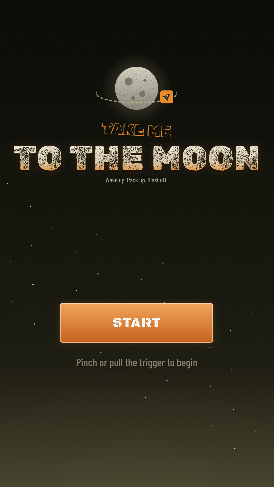
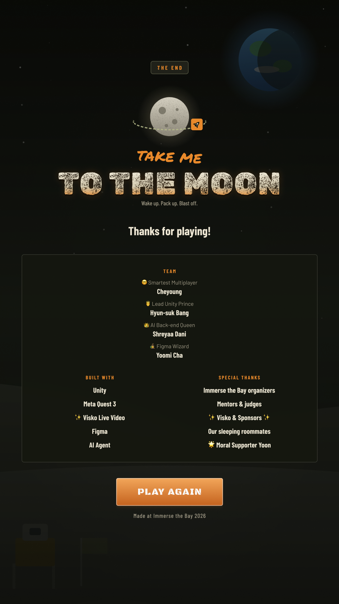
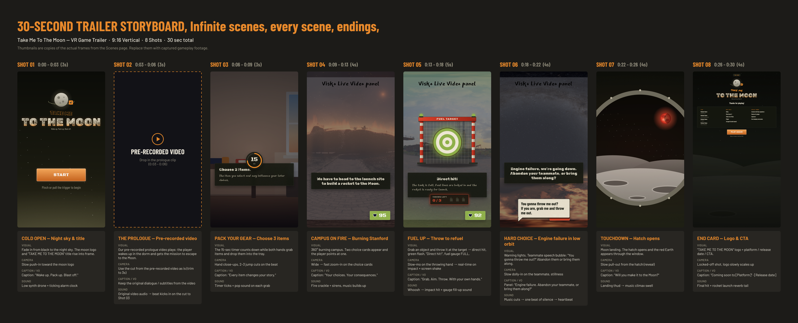
Challenge 3
Designing for unpredictable text
The friction: the AI writes every scene and option live, so we never knew how long any line of copy would be.
Designed flexible layouts that hold AI-generated text of any length without breaking, instead of designing around fixed copy.
The UI stayed intact across playthroughs where no two scenes were ever the same.

Challenge 4
Interaction without a tutorial
The friction: we wanted players to do more than point and click, but there was no room for a tutorial in a fast-paced escape.
Built physical mini-games tied to the opening — grabbing items in 15 seconds, throwing them into the fuel tank — so actions explain themselves.
The three items grabbed at the start come back at the launch pad, linking interaction to story.
Challenge 5
Keeping a self-writing story coherent
The friction: an open-ended AI story can drift, and we had designed far more than one weekend could hold.
Mapped scenarios on a whiteboard before building, fixed six locations, and cut scope until one clear idea remained. A premise document set the world, tone, and rules for the AI, and the AI remembers earlier choices to keep the journey connected.
The constraint of six checkpoints sparked more diverse ideas within those limits, while keeping the generated story on track.
Challenge 6
Making designs land in 3D space
The friction: a design that looks right in Figma can feel wrong once it's placed in a 3D scene, and a flat screen alone doesn't feel like a world.
I worked closely with the developers, communicating placement, scale, and positioning in detail as they built each scene in Unity. I also created 360° backgrounds that surround the player at every checkpoint.
The designs translated into VR as intended, and the judges said the 360° environments made the experience feel more vivid and immersive.
Challenge 7
Hiding the wait for live video
The friction: generating, streaming, and decoding each scene takes time. A blank screen or a sudden cut would break immersion right after every choice.
The screen never goes empty: it holds the last frame until the next one is ready. After a choice, the current video morphs into the outcome while the next scene prepares in the background. Choices appear only after a few seconds of visible video, and a Continue button lets the player move on when they're ready.
Transitions feel like one continuous shot. Testing in the headset caught what looked fine on a monitor: UI blocking the video, unclear interactions, and transitions that ran too long.
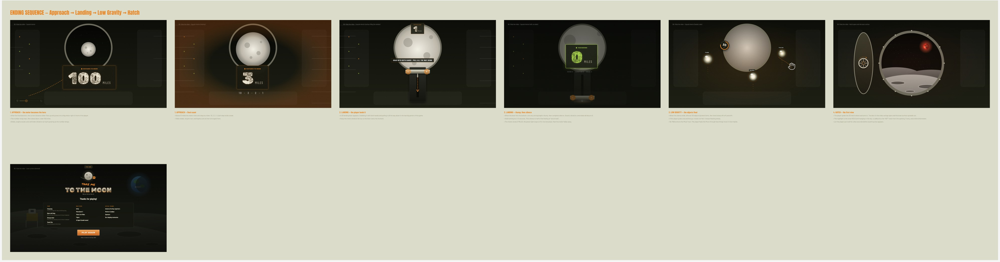
Moon Citizen — or Moon Reject
Everyone reaches the Moon. Not everyone is welcome there. Every player starts at 100 wellness, and each choice moves it up or down by 5, judged by how you treat others. Score 85 or more to become a Moon Citizen; anything less and you're turned away at the colony gate.
Feedback
Showing the score without explaining it
Choice feedback
A +5 or −5 popup appears after each decision, so players feel the weight of a choice without being told the rules in advance.
Wellness bar
A bar stays in view from the first decision onward and shifts from green to orange to red as the score drops.
The result screen
The end screen shows the verdict, final wellness, successful throws, the full decision history, and a traveler type.
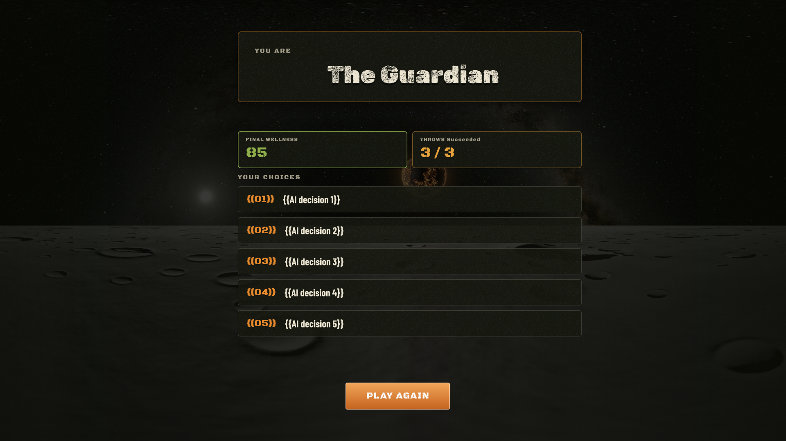
Verdict
Five traveler types for Moon Citizens
Tuning the score took several rounds of live testing, so the verdict reflects what kind of person you are under pressure.
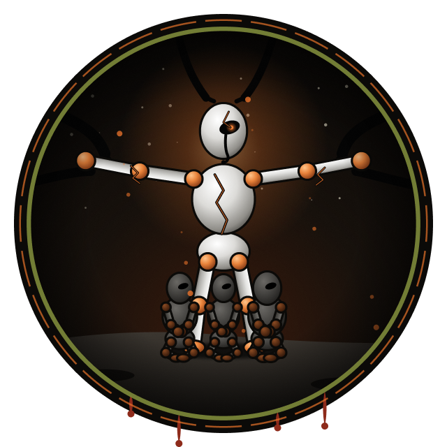
The Guardian
Never put yourself first. Everyone you met made it because of you.
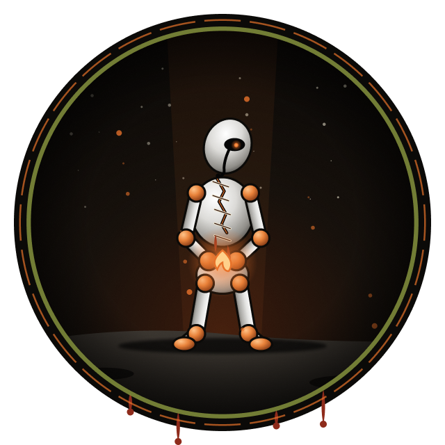
The Redeemed
Left your roommate in the first minute, then spent the journey making it right.
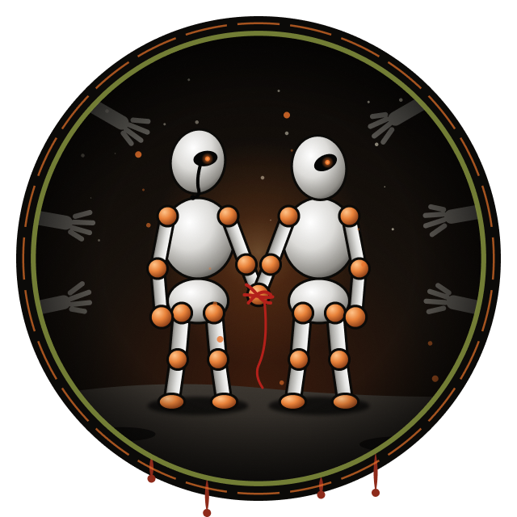
The Loyal One
Would do anything for your own people. Strangers had to earn it.
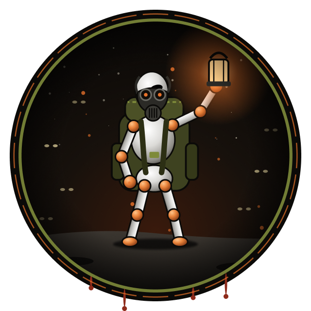
The Ace Pilot
Hit every throw at the launch pad to fuel the rocket.
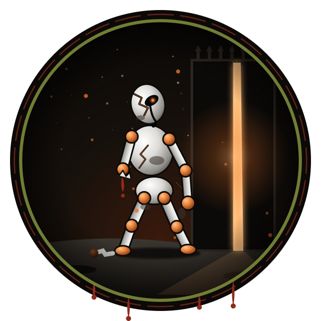
The Survivor
Not perfect, and you knew it. You did enough good to be let in.
Not admitted
"You made it to the Moon. The people here know what you did to get a seat."
Learnings & What's Next
Constraints made the creativity possible
What I learned about design
- Preparing early paid off. Studying the Meta Quest and Vision Pro guidelines before the event turned an unfamiliar medium into one I could design for confidently under time pressure.
- AI is a real accelerator under pressure. It cut prototyping time dramatically and made late changes, like moving the storyboard from wide to vertical, quick instead of costly.
- Constraints fuel creativity. A tight scope made ideas feasible, and a smaller, complete journey was worth more than a long list of unfinished mechanics.
- Map before you build. Laying out scenarios on a whiteboard first exposed missing pieces and kept the storyline consistent.
- Test in the headset early. It caught problems a monitor hides, from UI that blocked the video to transitions that ran too long.
- Environment design is part of the experience. The 360° backgrounds weren't decoration; the judges called them out as what made the world feel alive.
What I learned beyond design
- Detailed communication bridges design and engineering. Frequent progress checks kept us on schedule, and talking through exact placement and scale is what made the Figma designs work in VR.
- Writing for the AI is a design task. I wrote a premise document that set the world, tone, rules, and limits for the AI story director, and saw how much a clear brief and length rules shape what the AI produces.
- I got a hands-on look at the development side. I studied how the OpenAI API connects to the game, and how each player choice becomes the next scene, two choices, and video prompts.
- Sharing through GitHub brought design and code closer. I shared my design files in the team's repo so developers could pull them straight into the build, and saw how my work moved from Figma into the game.
What's next
- Classroom edition on climate — land planning and water conservation, with a hopeful tone for kids.
- Clearer visual consequences, so each choice reads instantly on screen.
- More journeys beyond Stanford and the Moon.
- Shorter waits between scenes, and eventually a continuous world with no cuts as live video generation speeds up.